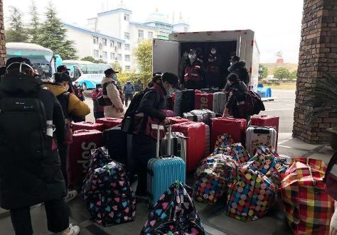
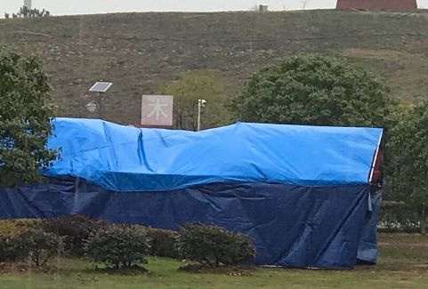
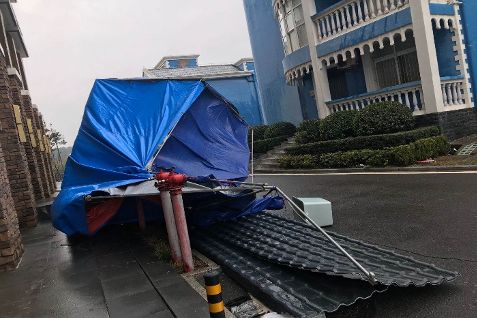
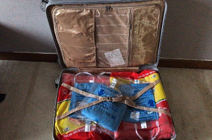

武汉 | Fake Stories
原文链接 备份链接 作者：北林 编辑：北林 特别不感谢：给阻止疫情制造麻烦的混蛋们 我听来了许多虚假的、不符合主流的、刻意制造矛盾的流言蜚语; 发这里是告诉大家: 不要相信，不要转发， 都是假的，不要去调查， 尤其是记者们，以下都是假 …


2月9日，温州康宁医院集团精神心理科主任医师唐伟，跟随浙江第三批援鄂医疗队抵达武汉，参与武汉抗疫一线的心理危机干预，为医护人员和患者，提供心理援助。
期间，唐伟主任在日记中记录了医护人员克服艰难，奋战抗疫一线的经历。八点健闻征得作者同意后，摘编整理，分期发布。


妻子对着武汉方向说：我把丈夫借给你们
2月9日 星期天 晴 杭州
凌晨，我正在接热线，被急促的电话打断，一看是董事长管伟立，这个时间他给我打电话一定有重要事情，这种事不是第一次了。
“唐伟，准备东西，明早九点赶往杭州，和省医疗队汇合，赶往武汉。你可愿意？”董事长声音坚定。我俩接触20年了，他知道我的脾气和性格，讲话非常直接，根本不容我考虑，也知道我根本不用考虑，2008年汶川地震时也是这样，半夜给我电话，早上就走。
凭二十几年危机干预的经验，我预感这次肯定要进驻地面进行干预，没想到国家这么快就行动了。
赶紧收拾东西，准备物资，脑子里更多的是想去了如何工作。这次不同以往，防疫的主要方式就是隔离，但我们心理援助、心理治疗最好面对面，如何做到面对面自己又不被感染，这是一个问题。尤其是防护，对我们心理/精神科医生是一个全新概念，如果有精神病人发病，出现冲动伤人，我该怎么办？弄坏我的防护服，或是其他工作人员的防护服，现场怎么处理？这都是前所未有的问题。
早上睡得迷迷糊糊，听到妻子叫我：你该起床出发了。
多年的危机干预，妻子已经习惯我这种突然离家的工作方式，她默默的帮我装好行囊，这次明显看到她眼里噙着泪，对着武汉方向说：我把丈夫借给你们，你们一定还给我。
出门时女儿跑过来问我，爸爸武汉那么危险您去干什么？望着女儿天真的脸，我说：武汉有很多怪兽，爸爸去打怪兽，打完怪兽就回来。女儿知道，打怪兽的都是英雄，英雄都会回来的。
8点赶到医院，怕妻子难过，没有让她来。医院各个领导都在等我，安排好科室工作后，医院组织简短仪式，温州市卫健委主任及管董事长等医院领导都对我给予厚望，要我安全回来。
抵达杭州，和刘志宏主任（杭州怡宁医院副院长兼心理健康中心主任）会面。经过短暂的培训，参加完省政府领导举行的出征宣誓大会，几十辆大巴载着我们，载着浙江人民的援助向机场出发。
4点40分，三辆包机冲上天空。
武汉，我们来了。
武汉胜则湖北胜，湖北胜则全国胜！
“国有难，必须担起每个人的责任”
2月10日 星期一 阴 武汉
昨晚一点半睡觉，早晨被嘈杂的声音惊醒，跑到大厅，来了许多队员，哪里的都有，一个一个既兴奋又凝重。
几个光头的小护士尤其引人注意，这是工作的需要吧，我实在不好意思去拍照，就让这一刻留在脑海里。
人们总是行色匆匆，来不及打招呼，也看不清谁是谁，每个人只是露出两只眼睛。
我和刘志宏主任极想得到任务，但就是这么一个简单的愿望也难以实现，现在物资保障重于心理保障，看来我们还得继续找活干。
下午，浙江省立同德医院的王鹤秋主任及他的同事去了另一个地方，只剩下我和刘主任孤独而又寂寞的等待。
晚上接到大量问候，患难见真情，感谢你们心里有老唐在。
夜深人静，八十老母打来电话，本以为妈妈不能承受，走时没有跟她讲，觉得愧对妈妈。但她告诫我，你是医师，这个时候就要有担当，国有难，必须担起每个人的责任……母亲的话坚定了我在这里的决心。
别无牵挂，安然入睡。
“放心工作，后勤保障不是问题”
2月11日 星期二 小雨转阴 武汉
经过昨日的奔波，今天起来精神明显好转，还没有缓过神来便接到转移的命令。没有人知道我们到那里，也不知道问谁，好像每个人都不知道，知道的人也不知道在哪里。
天气阴冷，大家心情都很沉重，一路没有说笑，都在看手机信息，给家人和朋友打电话，报平安，中午我们赶到木兰草原度假村，才知道我们要在这里接管一个方舱医院。
后勤保障出现问题，我们没有吃喝，这里什么都没有，没有被子、褥子，也没有热水，部分队员出现了不安烦躁的情绪。作为随队的危机干预队员，我们出来平息了大家的不安，让大家先回房间，慢慢解决。晚上10点钟，被子褥子到，但是基本是夏季使用的。面对冰冷的天气，队员们也只能这样了。
下午接到通知，要我们进入方舱医院，但自己要解决隔离服之类的防护用品。这下难为我们，因为我们接到通知到出发只有不到8个小时，加之是晚上根本没有时间准备，再说我们是精神病专科医院，平时也没有这些东西，正当我们束手无措之时，管伟立董事长及王红月总经理打来电话，告知一切问题公司都会解决，放心工作，后勤保障不是问题。夜里9点，叶爱群老师打来电话，告知如何做好防护和消毒，用心良苦，书到用时方恨少，平时叶老师强调的洗手消毒终于有了用武之地。
晚上躺在被窝里接热线。现在我要克服的是冰冷的天气，不能开空调，没有热水，只有老婆的关心话语，才使我感到温暖，支持我有能力继续完成使命。
两个五十多岁的人，吵得面红耳赤
2月12日 星期三 阴转晴 武汉
度过了冰冷的一个晚上，晨起发现呼出去的气都有雾，看来武汉这里不是一般的冷。早起和刘志宏主任一起寻找组织，要领任务，但和综合队组队，我俩基本处于边缘化，好像没有人关注我们，失落感产生，我们要尽快工作。
路上遇到一个从方舱医院下来的省人民医院的小刘护士，她给我们讲述了前期来这里人群的反应：“进入方舱医院，当地的护士见到我们都忍不住哭了，他们说你们再不来我们真的受不了了。病人太多太多，不知道什么时候看完，好像永远看不完……”
小刘护士们分四个班倒班上，每个护士要管理100-150个病人，每天查房两次，主要看病人病情变化，是否需要转院，是否需要做必要检查，他们下班没有休息，四班连轴转，因为没有人能再替他们顶班。
经过我们的询问得知，方舱里面的人群压力很大。一个是方舱医院没有那么多的抢救设备，再一个人员实在太多，这种场面，不论对隔离人群还是工作人员都是心理上的碾压。
来武汉，是需要勇气的，隔离病房太考验体力和心理承受压力。在驻地宾馆，有的房间晚上会传出大哭的声音，甚至咆哮。目前每个人一个房间，按院感要求，大家不能近距离接触，也不能到房间，其实每个人都明白怎么回事，但第二天会装的像没有事情，继续工作。医护人员的心理压力达到了极点。我想这就是省厅派我们来的任务吧。
小刘护士和我们聊了半小时左右，说和你们聊完好多了。我和刘主任也给了她一些心理防护的建议，共情、倾听、发泄、以及一些放松技术。这应该是第一例在疫区面对面的心理援助吧。
我和刘志宏主任感到压力很大。中午顾不上吃饭，刘主任就起草了工作计划，下发各援助队员微信群。
饭后接到通知，明天就要有部分人员进入方舱医院，每个人都要学会穿防护服，为了节省物资，每个人要用尿不湿，原因是尿不湿不是紧缺物资，能够买到。
对于我和刘主任来说，穿衣服的确是一个难题，我两个反复练习，认真体会，比考试还认真。
对于谁下方舱医院，出现了分歧。考虑到刘主任年龄较大，身体不好，决定由我进入方舱医院，但刘主任坚决不干，认为这是两个人的事情，我们是代表浙江省，代表温州市，代表康宁医院，怎么能当逃兵？再说他是党员，怎么能在关键时刻不进？我两个五十多岁的人第一次吵得面红耳赤，其实大家心理都明白进去意味着什么。最后决定不下来，便给管董事长打电话。最后决定3比1，我进三次，他进一次。刘主任很不高兴地接受了任务，但他提出，每天我进方舱他都和我一起去，在外面等我出来，一起回来。瞬间我泪奔了。
“我一定会凯旋而归”
2月13日 星期四 阴天 武汉
现在每天做的就是在微网上接咨询，和我们浙江援武汉医疗队进行对接。医疗队大队长已经告知全体队员我们的工作方式和地点，终于有了归宿感。
今天新闻发布武汉新增13436例，早上到现在我收到几十个电话，百条微信，都是问候，期待我凯旋而归。感谢这些关心我的人，我是来援助武汉的，我一定会凯旋而归。
下午突然来通知，让浙江一部分队员支援武汉四院，那里是重症病区。我们浙江队这几天就像突击队员，哪里疫情重就被调往哪里，我和刘志宏主任下楼帮她们搬行李物资，一个个队员拥抱分离，几个女孩子再也抑制不住，泪水挂满了脸。

她说自己要崩溃了
2月14日 星期五 小到中雨 武汉
湿冷的天气让我们有些难以适应，房间里为了通风要开门窗，保持空气流畅，但开门房间里就会充满消毒水的味道，让人头昏脑胀。
目前生活保障没有问题，每天三顿盒饭，会有一个水果，就现在的情况应该很好了，今天开始不知道什么原因，总是停电，听其他队员说天气冷，电力跟不上了，看来后勤保障是多么重要。
上午有个咨询。考虑到隐私，没有问姓名和地址。来电者是一个女性，听声音应该30岁左右，女子讲她妈妈在家哭了四五天了，由于隔离无法和妈妈见面，每次打电话，妈妈不是不接，就是接起来哭。问其原因，说自己受不了了，不知道疫情什么时候过去，生活什么时候恢复，加之年龄较大，不能得到外界有效的信息，故很紧张，担心自己会死掉，死掉了也没人知道，整夜睡不着，在房间里走来走去，不停的哭，也不吃饭。女儿很焦虑，也没什么好办法，因为家里还有一个小孩子，顾了妈妈，顾不了孩子，顾了孩子就顾不了妈妈，说再这样，自己真的要崩溃了。
和刘主任商量后，给予如下干预：
1、倾听。在听的过程中发现资源。
2、倾诉。让她多叙述，在叙述过程中缓解她的焦虑。
3、评估。根据她的语言、语速，及基本信息来评估目前情况
4、共情。告知她目前这种情况，产生焦虑、紧张是正常的心理反应。
5、接纳。自己接受这种躯体和生理反应。
6、支持。在听叙述的过程中，找到支持系统，激发自己的潜在能力解决问题。
7、建议。自己控制自己情绪，缓解自己的焦虑，不要把自己的情绪带给妈妈。教她蝴蝶拍、腹式呼吸技术。
8、寻找外部资源。给妈妈的当地居委会打电话，让其帮助看看妈妈情况，并给予反馈，每天定时给妈妈打电话，并告知外面的消息，鼓励其战胜困难的信心。
9、告知我和刘志宏主任的联系方式，随时可以联系我们。
下午，领队们商量进仓前的准备。
大家在建隔离区，也就是我们从方舱医院回来换衣服的半污染区，清洁区，这是建好的各类帐篷。

正当大家庆贺自己的劳动成果时，一阵大风吹过，我们的帐篷成这样了。

白衣天使们户外生存能力真的要培训了。在这里不仅要保障别人，如何保障自己都是一个现实问题。
来了一个好消息
2月15日 星期六 雨转中雪 武汉
凌晨被冻醒，看看时间，4点20分，无法入睡，起来在房间里跑步。
整理一下昨天的信息，发现好多人发信息给我，都是醒目的题目：昨日湖北医护人员感染1502人，武汉医护人员感染 1102人，死亡6人……
心理沉重，这个信息发出来，医护人员的压力更大了。心理干预也将如我预料，将呈爆发之势。
接到命令，要有一些人进方舱，大家又为谁进方舱争吵，每一个来到这里的人都不是孬种，都是好样的。为了节省时间，进方舱的每人一袋口粮。

大家要进舱了，刘志宏主任和我跟大家一起聊一些心得，进舱前的一些感受，还有从舱里出来一些医务人员的经验，来缓解大家紧张的情绪。
外面的雪越下越大，天气越来越冷，我和刘主任只能不停的跑步、抖动来获取自身的热量。
临近中午，来了一个好消息，康宁寄出的物资（电热毯、电暖器，热水袋及必要的生活用品）到了，但是由于疫情关系，要叫我们自己去拿。邮局离我们11公里，我们没有车，根本无法完成。当地派出所所长和酒店经理协商，给我们去取，解决了我们担忧的问题。
刘主任随车去取物资，我在等待。邮递员小哥冒雪给我们送来，感恩。

看到总院及家里寄来的东西，还有刘主任家里寄来的东西，我们迫不及待打开，全部都用上了，我们感到了温暖，今晚是一个温暖之夜。
（待续）
唐伟|撰文
刘冉|责编

我们尊重原创版权，未经允许请勿转载。
授权转载
郑琪 微信号: 1281949389
商务合作
上海：leslee 13916263824
北京：Jessie 13911125922
线索爆料、意见反馈，加入核心读者社群
请扫码联系健闻君

让朋友们看到你也在看
↓↓↓
原文链接 备份链接 作者：北林 编辑：北林 特别不感谢：给阻止疫情制造麻烦的混蛋们 我听来了许多虚假的、不符合主流的、刻意制造矛盾的流言蜚语; 发这里是告诉大家: 不要相信，不要转发， 都是假的，不要去调查， 尤其是记者们，以下都是假 …
原文链接 备份链接 跳广场舞、练瑜伽、打太极、复习备考……每天我们都能从社交媒体上了解到武汉“方舱医院”内患者们的日常生活。这些看似平常的活动，却为紧张的抗疫工作带来了一丝活力与鼓舞。 2月3日晚，武汉市宣布将在武汉国际会展中心、洪山体育 …
原文链接 备份链接 这段时间，生活乱糟糟的，整天不是担心这个就是害怕那个，三个亲人隔离，我一个人带着两个娃度日，本来可以是悠然的居家时光，却因为疫情让我这个家步履维艰。 口述 | 叶子（化名） 整理 | 黄祺 今天是我33岁的生 …
原文链接 备份链接 实习生 于洋 澎湃新闻记者 赵思维 2月5日晚，湖北武汉洪山体育馆改造的武昌方舱医院开始接收首批新冠肺炎轻症患者。至11日8时，武昌方舱医院先后投入120名医生、400名护士的医护力量，目前仍有437位轻症患者在接受治 …
原文链接 备份链接 凤凰新闻客户端 凤凰网在人间工作室出品 打开凤凰新闻客户端，搜索「在人间」并关注 一 2月8日元宵节。晚上9点多，家里老人小孩都已经睡了。我和妻子还没睡，在刷手机看新闻。突然，工作群里冒出消息，主管说“北京武汉视频紧急 …